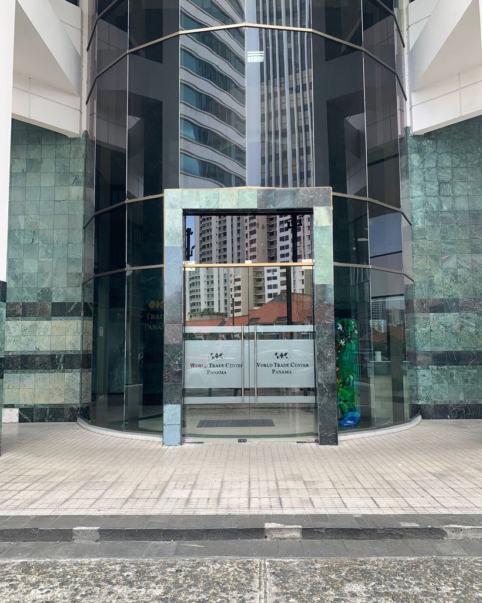
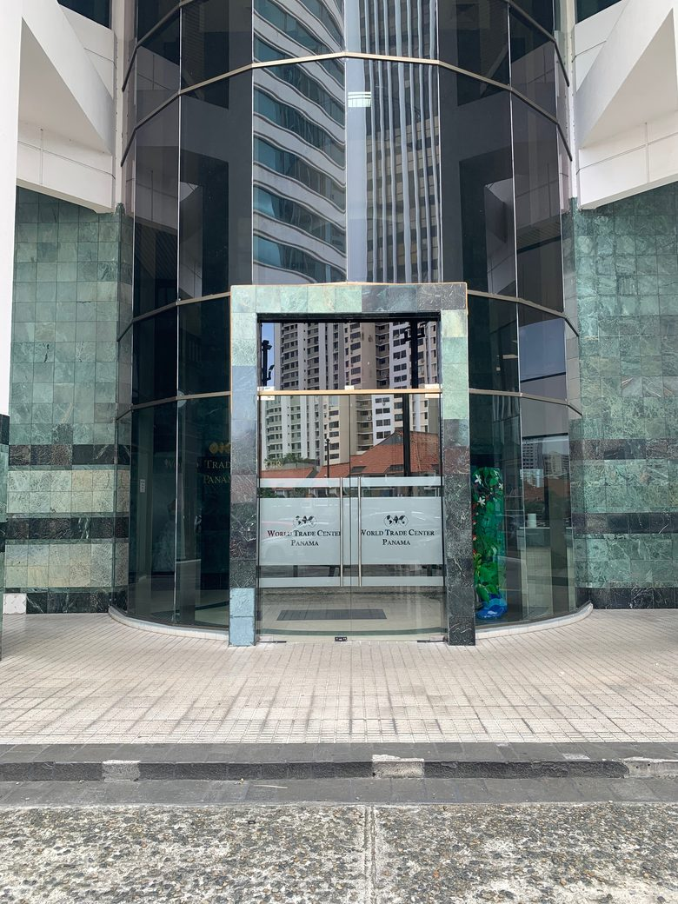

Sundays at 10:00 AM on Floor 2.
At the World Trade Center on Calle 53 Este, Marbella. The service is entirely in English and runs about 90 minutes.

- Service
- 10:00 AMEvery Sunday, every week
- Arrive
- 9:45 AMTo settle in and find a seat
- Where
- World Trade CenterCalle 53 Este, Marbella
Take the lobby elevator to Floor 2.
Parking and drop-off
Wherever you arrive, the elevator takes you to Floor 2.
- Floor 2
LifeBridge
Our doors are straight ahead as you step out of the elevator.
- Street level, Calle 53 Este
Surface lot
In front of the building, off Calle 53 Este.
Taxi or rideshare
Ask to be dropped at the World Trade Center main entrance.
- Underneath the building
Garage
Park below and take the elevator up to Floor 2.
Finding the room
Four photos, from the street to our doors.

Enter from Calle 53 Este

Elevators are on the right

Press 2

Our doors, straight ahead
What a Sunday includes

Music, then a message from the Bible
BridgeKids, for ages 4 to 11
Coffee afterward
The service is the same every week, so there’s no special Sunday to wait for.
- Sunday·10:00 AM
- Sunday·10:00 AM
- Sunday·10:00 AM
- Sunday·10:00 AM
- Sunday·10:00 AM
Can’t make it in person? The same service is live on YouTube every Sunday at 10:00.
Watch live on YouTube